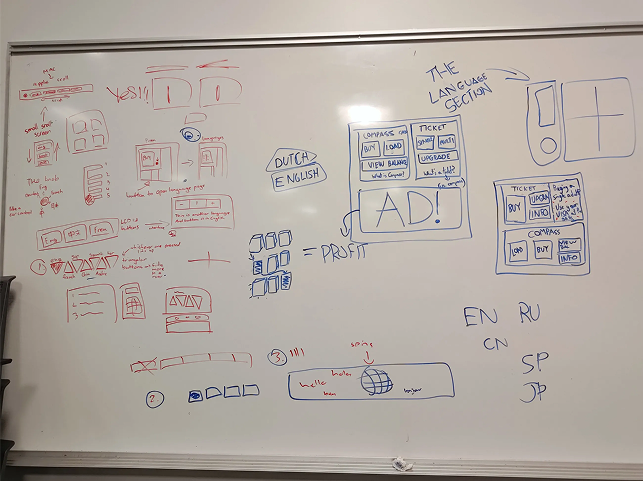
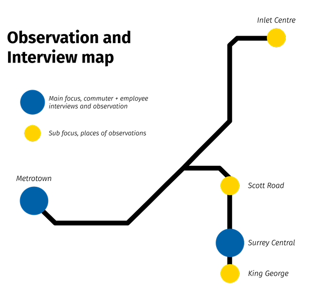
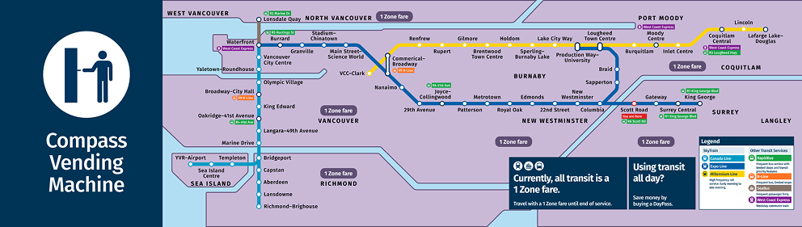
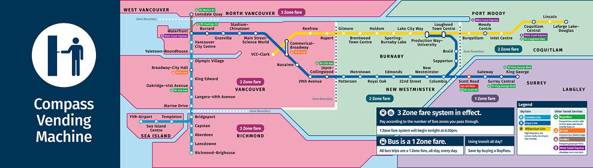

TransLink Interactive Map
Project Overview
Reimagining the existing map on TransLink's SkyTrain ticket machines to reduce confusion about the SkyTrain's zone-based fare system amongst new and inexperienced riders.
Project Context
Process
Ethnography Study
On-site observation, interviews and photographs were conducted to gather insights into the pain points and positive experiences around the fare zones. Overall, the main concern was that many tourists and skytrain employees receive comments how on weekends they are confused about what fares to get.

Process
Design Direction
Through our ethnographic research, we kept noticing the same pattern in which new riders who gravitated toward the map mounted above the machine, using it to orient themselves before buying a ticket. Other riders glanced at it too, but new riders were clearly its primary audience.

The Outcome
Old with the New
From the original map, the differenciate between the zones aren't clearly indicated for new riders. With the distinct colour associate with each zone allows to easily read what zone ticket needed for their trip during any time of day.

